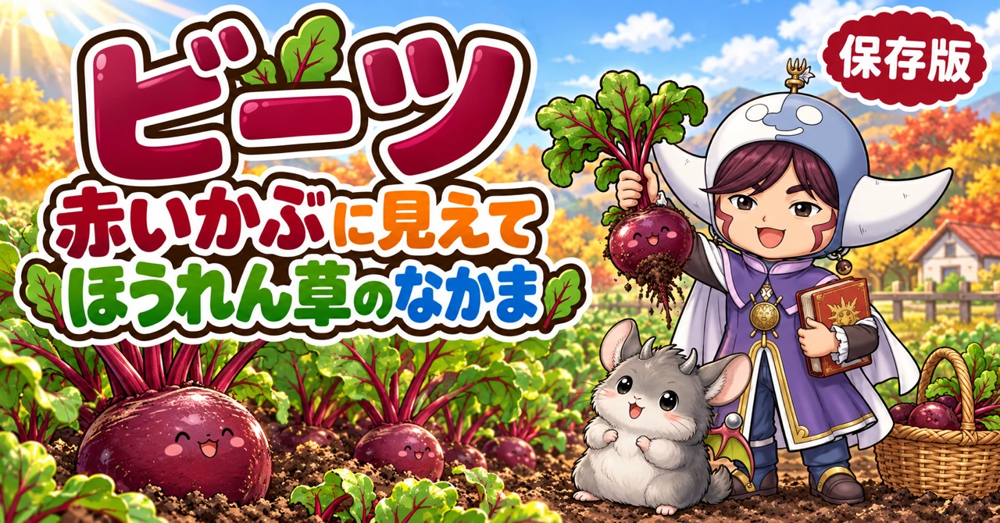
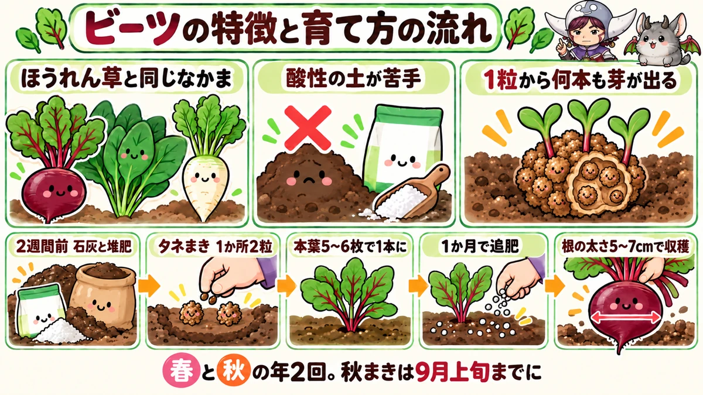
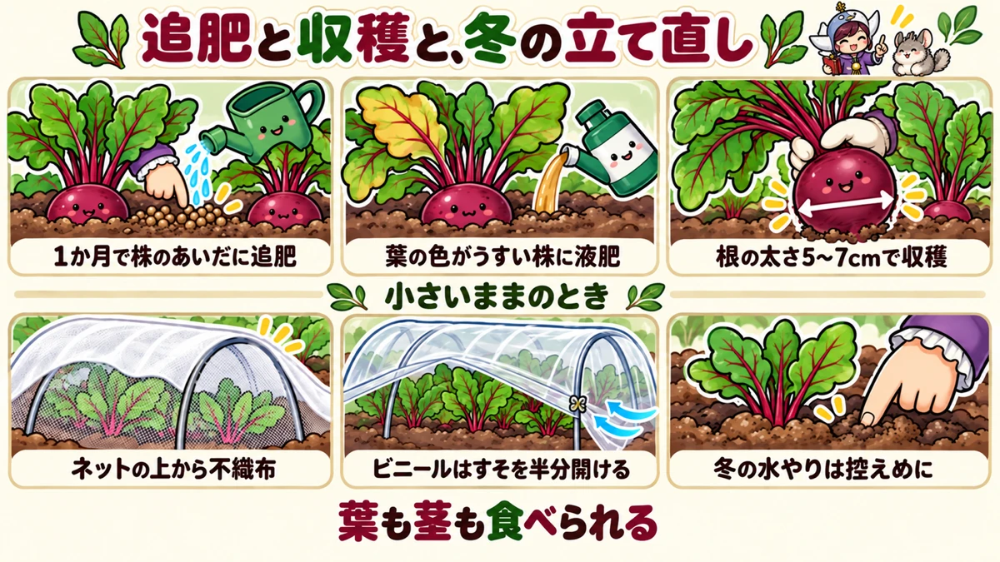

ビーツの決定版｜赤いかぶに見えて、ほうれん草のなかま。タネまき・石灰・間引き・追肥・収穫の時期と、冬の小さいままの立て直し

📖 この記事の目次
この記事で分かること
- ビーツは、見た目はかぶや赤い大根に似ていますが、アブラナ科ではなく、ほうれん草やてんさいと同じヒユ科の野菜です。
- ほうれん草と同じく、酸性の土を嫌います。植える前に石灰で酸度を整えておきます。
- タネは、かたい殻の中に、いくつかのタネが入った形をしています。1か所から何本も芽が出るので、間引きは、引き抜かずにはさみで切ります。
- 肥料をよく吸う野菜です。タネまきから1か月ほどで、株と株のあいだに追肥をします。
- 寒い地域を除けば、春と秋の2回育てられます。秋まきは9月上旬までに済ませるのが目安です。まきどきが遅れると、寒さで小さいまま冬を迎えます。
畑で、真っ赤な根を土から抜いたときの驚き。切ると、うずまき模様が出てくる品種もあり、色の濃さに、思わず声が出ます。ビーツは、ボルシチなどのスープに使われる、色あざやかな根の野菜です。最近は、スーパーでも見かけるようになり、家庭菜園で育てる人も増えてきました。
見た目はかぶに似ていますが、実はまったく別のなかまの野菜です。そのため、育て方にも、かぶとはちがうこつがあります。この記事では、ビーツのタネまきから収穫まで、順番に書いていきます。
この記事の読み方
はじめてビーツを育てる人は、「早見」と「土づくり」「タネまき」から読んでください。いま育てているビーツが小さいままで困っている人は、「小さいままのときの立て直し」が役に立ちます。
早見：ビーツ
- なかま：ヒユ科（ほうれん草、てんさいと同じなかま）。かぶや大根のアブラナ科とは別
- タネまき：春（3月ごろ）と、夏の終わりから秋（9月上旬まで）。寒い地域を除けば年2回
- 土：酸性を嫌う。植える前に石灰で酸度を整える
- タネ：かたい殻の中に複数のタネ。1か所から何本も芽が出る
- 間引き：本葉が5〜6枚のころに1本に。引き抜かずにはさみで切る
- 株間：15cmほど
- 追肥：タネまきから1か月ほどで、株と株のあいだに
- 収穫：根の太さが5〜7cmほど。タネまきから70日ほどが目安（品種による）
- 食べるところ：根と、茎と葉

ビーツを知る
かぶに似ているけれど、ほうれん草のなかま
ビーツは、丸く太った赤い根の形から、かぶや赤い大根のなかまと思われがちです。ところが実際は、ほうれん草や、砂糖の原料になるてんさいと同じ、ヒユ科の野菜です。日本では、赤い大根、火焔菜などと呼ばれることもあります。
なかまがちがうと、育て方もちがう
かぶや大根のなかま（アブラナ科）とは別のなかまなので、つく虫も、気をつける点もちがいます。アブラナ科を好む虫は比較的つきにくく、育てやすい面があります。一方で、ほうれん草と同じように、酸性の土を嫌うという性質があります。
甘くて、少し酸っぱい独特の味
ビーツは、ほんのりとした甘みがあり、少し酸っぱいような、独特の味わいがあります。真っ赤な色は、煮ても落ちにくく、スープに入れると、スープ全体が真っ赤に染まります。根だけでなく、茎や葉も食べられます。
タネの形がふしぎ
ビーツのタネは、ふつうの野菜のタネとちがい、ごつごつしたかたい殻の中に、いくつかのタネが入った形をしています。そのため、1粒まいたところから、何本もの芽がかたまって出てきます。この性質を知っておくと、間引きのやり方の意味が分かります。
品種の選び方
ビーツの品種は、根の形や色、収穫までの日数がいろいろです。
- 丸い形の品種：もっとも一般的。根の太さ5〜7cmほどで収穫するものが多い
- 切るとうずまき模様が出る品種：赤と白の輪が交互に並び、サラダに向く
- 収穫までの日数：タネの袋に書かれた日数を見て、秋まきなら寒くなる前に収穫できるものを選ぶ
はじめてなら、袋に「育てやすい」と書かれた、丸い形の一般的な品種から始めると安心です。
時期
春と秋の2回育てられる
寒い地域を除けば、ビーツは春と秋の2回育てられます。春は3月ごろ、遅くとも3月の終わりまでにタネをまきます。秋は、夏の終わりから9月上旬ごろまでにまきます。
秋まきは、遅れないように
秋まきのビーツは、まきどきが遅れると、寒くなる前に十分大きくなれず、小さいまま冬を迎えてしまいます。9月の終わりにまいたビーツが、11月になっても小さいまま、ということも起きます。冬のあいだはほとんど大きくならず、収穫が翌年にずれこんでしまうこともあります。9月上旬までにタネまきを終えるつもりで、準備をしておきます。
春まきの注意
春まきは、3月のまだ寒い時期にタネをまくので、芽が出るまでに時間がかかることがあります。タネをまいたら不織布をかけて、土の温度と湿り気を保ち、芽が出るのを助けます。芽が出て暖かくなってくると、今度は虫が増えてきます。不織布のあとは防虫ネットにかけかえ、暑くなる前に収穫を終えられるように育てます。タネまきから70日ほどが収穫の目安なので、3月の終わりにまけば、6月ごろが収穫どきになります。収穫の時期から逆算して、まく日を決めておくと、あわてずにすみます。
少しずつ収穫して、冬を楽しむ
秋に早めにまいておけば、冬のあいだ、大きくなったものから少しずつ収穫して、長く楽しむことができます。
土づくり
酸性を嫌うので、石灰で整える
ビーツは、ほうれん草と同じく、酸性の土を嫌います。タネまきの2週間ほど前に、石灰をまいて、土の酸度を整えておきます。ビーツを育てる場合は、ほかの野菜より少し多めに石灰を入れる、という方法もあります。石灰は、袋に書かれた量を目安にし、入れすぎないようにします。
土の状態を測ってみる
石灰をどのくらい入れるか迷うときは、土の状態を測ってみると確実です。土を水に溶かして、試験紙で酸度や、肥料の成分の量を調べる道具が市販されています。
- 畑の土を少しとり、付属の容器に入れて、水を加える
- ふたをして、少なくとも1分ほど、中の水がよく動くように振ってかき混ぜる
- しばらく置いて、上のほうが澄んだ水になるのを待つ
- 上澄みに試験紙を決められた時間（10秒ほど）浸ける
- 決められた時間（60秒ほど）待ってから、試験紙の色を見本とくらべる
試験紙の種類によって、酸度、窒素、リン酸、カリなどが分かります。浸ける時間と待つ時間を守ることが大事です。結果を見て、酸性が強ければ石灰を、肥料が残っていれば元肥を控えめにする、というように調整します。
石灰と肥料は、少し間をあけて
石灰を入れたら、すぐに堆肥や肥料を入れるのではなく、少し日をあけてから入れるのが一般的です。タネまきの2週間ほど前に土づくりを始めると、余裕をもって準備できます。
肥料もしっかり入れる
ビーツは、肥料をよく吸う野菜です。タネまきの2週間ほど前に、堆肥と、油かすや鶏ふんなどの肥料を入れて、よく混ぜておきます。
水はけのよい場所に
根の野菜なので、水はけのよい場所を選びます。土はよく耕して、根がまっすぐ太れるように、かたまりや石を取りのぞいておきます。
植える場所の前の野菜にも注意
ビーツなどの根の野菜は、根にこぶを作るセンチュウの被害を受けやすい野菜です。オクラなど、センチュウが増えやすい野菜を育てたあとの場所にすぐ植えると、被害が出ることがあります。前に何を育てたかを思い出して、場所を選びます。

タネまき
点まき
- 株と株のあいだが15cmほどになるように、深さ1cmほどの穴をあける
- 1つの穴に、タネを2粒ほど落とす
- まわりの土を戻して、上から手で押さえる
- たっぷり水をやる
すじまき
- 畝に、板などで深さ1cmほどのまき溝をつける。葉物よりも、溝と溝のあいだを広めにとる
- 溝に、2cmほどの間隔でタネを並べていく
- 1cmほど土をかぶせ、上から押さえる
- たっぷり水をやり、不織布をかけ、防虫ネットもかける
タネまきのときにたっぷり水をやっておけば、そのあとは、日照りが続かないかぎり、あまり水やりはいりません。
穴あきマルチを使うとき
雑草取りが心配なときは、穴あきマルチを使う方法もあります。ビーツは株間が15cmほどなので、穴の間隔が15cmほどのマルチを選びます。穴の間隔が広すぎるマルチだと、場所がもったいなくなります。
芽が出るまで
ビーツのタネは、かたい殻に包まれているので、芽が出るまでに少し時間がかかったり、そろわなかったりすることがあります。芽が出るまでは、土を乾かさないようにします。不織布をかけておくと、乾燥を防げます。
芽が出たあとの日よけと虫よけ
夏の終わりにタネをまく秋まきは、まだ日ざしが強く、芽が出たばかりの苗は暑さに弱いものです。寒冷紗をかけておいた場合は、芽が出てすぐに外さず、本葉が3枚ほど出るころまでかけておきます。そのあとは防虫ネットにかけかえれば、雨や風よけにもなります。
まきなおしの余裕をもつ
秋まきは、芽がそろわなかったときのまきなおしのことも考えて、9月上旬までには最初のタネをまいておくのが安心です。
間引き
はさみで切る
ビーツは、1粒のタネから何本もの芽がかたまって出てきます。とても近いところに芽が出ているので、指で引き抜こうとすると、となりの残したい芽の根まで傷つけてしまいます。間引くときは、引き抜かずに、はさみで根元から切ります。
本葉5〜6枚で1本に
本葉が5〜6枚になったころに、元気なものを1本残して、ほかは切りとります。すじまきの場合は、何回かに分けて間引き、最後に株間が15cmほどになるようにします。
しっかり間引くと大きくなる
ビーツは、しっかり間引いて育てると、かなり大きく育ちます。反対に、タネをまいたまま間引かずにおくと、株どうしが込み合って、どれも小さいまま終わってしまいます。間引きのタイミングを逃さないことが、大きなビーツを作るいちばんのこつです。
込み合った葉は、互いに日陰を作り合い、養分も取り合います。葉と葉が重なったところには、虫も隠れやすくなります。1株ずつが育つ場所を、間引きで確保してあげます。
間引いた葉も食べられる
間引いたビーツの若い葉は、やわらかく、サラダなどに使えます。みそ汁や炒めものに入れてもかまいません。間引き菜を楽しめるのも、自分で育てるからこその楽しみです。茎の赤い色がきれいで、料理の彩りにもなります。
追肥と、ふだんのお世話
1か月ほどで追肥
ビーツは肥料をよく吸うので、追肥が大切です。タネまきから1か月ほどたったら、株と株のあいだに穴をあけるか、すき間に、鶏ふんなどの肥料を入れて、土とよく混ぜます。そのあと、早く効くように、じょうろで水を流しておきます。この追肥をしないと、よいビーツができにくくなります。
葉の色を見る
葉の色が黄色っぽい、うすい緑になっているときは、肥料、特に窒素が足りていないことがあります。元肥をまくときに、場所によって肥料がかたよっていると、同じ畝の中でも、育ちのよい株と悪い株がはっきり分かれます。
育ちが悪い株には液肥を
育ちの悪い株には、早く効く液体の肥料を、株元に与えます。たとえば、油かすから作った液肥を200倍ほどに薄めたものを、生育の悪いところに重点的に与える方法があります。1週間ほどあけて、もう一度与えます。ただし、与えすぎると逆の問題が出るので、2〜3回までにとどめます。
虫
ビーツは、アブラナ科の野菜に比べると、虫がつきにくい野菜です。ただし、アブラムシはつくことがあるので、葉の裏や新しい葉をときどき見ます。タネまき直後の小さいうちは、防虫ネットをかけておくと安心です。
アブラムシがついたら
アブラムシは、葉の裏や、株の真ん中の新しい葉に集まります。数が少ないうちは、やわらかいブラシで払い落としてつぶすか、水で洗い流します。油と台所用洗剤を水に混ぜた液（油石けん水）をかける方法も知られていますが、農薬のきまりで、虫よけに使うことが認められていない資材です。たくさんついてしまったときは、アブラムシの多い葉ごと取りのぞき、水で洗い流すことをくり返します。
雑草は小さいうちに
ビーツのまわりに雑草が生えていると、間引きをしないときと同じように、育ちのじゃまになります。雑草は、小さいうちに抜いておくと手間がかかりません。
土がかたまったら、軽くほぐす
雨や水やりで、畝の表面の土がかたくしまってきたら、株のまわりを軽くほぐして（中耕）、空気が通るようにします。土が減ったり沈んだりして、根の肩が出てきたときは、株元に軽く土を寄せます。土を寄せると、株がぐらつかず、安定して育ちます。
かぶや大根といっしょに育てる
ビーツは、かぶや大根とはなかまがちがうので、同じ畝に並べて育てると、互いに虫を寄せにくくする効果がある、という考え方もあります。ただ、アブラムシはどちらにもつくことがあるので、見回りは欠かせません。
収穫
収穫の目安
根の太さが5〜7cmほどになったら、収穫どきです。品種にもよりますが、タネまきから70日ほどが目安です。秋まきのものは、11月ごろ、根の太さが5cmほどになったら収穫できます。大きくなったものから、順に抜いていきます。
とり遅れに注意
収穫どきの大きさになったら、早めに抜きます。大きくなりすぎると、根が割れたり、かたくなったりすることがあります。とくに、乾いた日が続いたあとに急に雨が降ると、割れやすくなります。
とり方
根元の茎をまとめて持ち、まっすぐ上に引き抜きます。斜めに引くと、根の途中で折れることがあります。土がかたいときは、株のまわりの土を少しゆるめてから抜きます。
葉も茎も食べる
ビーツは、根だけでなく、茎や葉も食べられます。収穫したら、葉も捨てずに使います。

小さいままのときの立て直し
11月に小さいと、大きくなりにくい
秋まきのビーツが、11月になっても小さいままのことがあります。まきどきが遅れた、肥料が足りない、場所によって肥料がかたよっていた、などが原因です。朝晩の寒い日が続くようになると、ここから大きく育てるのは難しくなってきます。
寒さから守る
朝晩が冷えて、昼は暖かい、という時期には、防虫ネットの上から不織布をかぶせて、保温します。ビニールをかける方法もありますが、その場合は、すそを半分くらい開けておきます。ビニールでしっかり覆ってしまうと、昼の暑いときに中が蒸し焼きのようになり、熱くなりすぎます。
不織布のかけ方
- 防虫ネットをいったん外すか、ネットの上から作業する
- 不織布を畝の上にふわっとかける。ぴんと張りすぎない
- 四すみを、ピンや押さえでとめる
- その上から防虫ネットをかけ直し、すそを押さえでとめる
不織布と防虫ネットを重ねると、寒さよけと虫よけの両方の効果があります。昼間に気温が上がる日でも、不織布なら中が熱くなりすぎることはあまりありません。
冬の水やりは控えめに
冬は空気が乾燥しますが、土は夏ほど乾きません。表面は乾いて見えても、土の中は湿っていることが多くあります。特にマルチを張っていると、土の乾きはかなり抑えられています。冬に水をやりすぎると、根が傷む原因になります。水をやる前に、株元の土を少し掘って、中が乾いているかを確かめます。土をにぎってかたまるくらいなら、水はいりません。
追肥で後押しする
葉の色がうすい株には、液肥で追肥をします。1週間ほどあけてもう一度。ただし、寒くなってからの追肥のやりすぎは、かえって悪い影響が出ることもあるので、回数は控えめにします。
小さくても、収穫して楽しむ
どうしても大きくならないときは、小さいうちに収穫して、葉も茎もいっしょに使います。小さなビーツも、色と味はしっかりしています。
なかまのスイスチャード
カラフルな茎の葉もの
ビーツと同じなかまに、スイスチャードという葉ものの野菜があります。茎が赤や黄色、ピンクなどカラフルで、畑にあるだけで楽しくなる野菜です。ビーツやほうれん草と同じヒユ科のなかまです。
育て方は似ている
スイスチャードも、ほうれん草と同じく酸性の土を嫌います。タネもビーツと同じく、かたい殻に包まれていて、芽を出させるのに少し苦労することがあります。芽が出てしまえば、育てるのは難しくなく、虫もつきにくい野菜です。
真冬に向けて育てると食べやすい
スイスチャードの茎や葉は、苦みが強いことがあります。寒い時期に育ったものは、苦みが少なく、甘みが増すと言われ、秋に植えて真冬に収穫する育て方がすすめられています。
スイスチャードの育て方
季節を問わず育つ「不断草」
スイスチャードは、日本では「不断草（ふだんそう）」とも呼ばれます。季節を問わずいつでも育てられることから、この名がついたとされます。暑さにも寒さにも比較的強く、夏の暑い時期でも、寒い時期でも育てられる、万能な葉ものです。
品種で見た目がちがう
スイスチャードという名前で売られている品種は、茎が赤、黄、白、ピンクなど、色とりどりのものが多くあります。一方、不断草として売られているものは、葉が緑で、茎も白っぽい緑のものが多く見られます。どちらも育て方は同じです。葉が少し縮れていて、ちぢみほうれん草に似た姿をしています。
ベビーリーフから大きな葉まで
タネをまいて20日ほどで、ベビーリーフとして若い葉を食べられます。60日ほど育てれば、十分な大きさになります。外側の大きな葉から少しずつかき取れば、長く収穫を続けられます。
芽を出させるのがいちばんのこつ
スイスチャードのタネも、ビーツと同じく、かたい殻に包まれています。芽を出させるのに苦労することがありますが、芽が出てしまえば、あとの育て方は難しくありません。タネまきのあとは土を乾かさないようにし、不織布をかけておきます。
酸性の土を避ける
ほうれん草やビーツと同じなかまなので、酸性の土を嫌います。タネまきの前に石灰で酸度を整えておきます。
虫がつきにくい
ほかの葉ものに比べると、虫がつきにくいのも、スイスチャードのよいところです。アブラナ科の葉ものが虫で育てにくい時期にも、育てやすい野菜です。
苦みと季節
苦みが気になるときは、秋にタネをまいて真冬に収穫してみてください。寒い時期に育ったものは苦みが少ないと言われます。
秋まきビーツの流れ
- タネまきの2週間前：石灰で酸度を整え、堆肥と肥料を入れて耕す。畝を立てる
- タネまき（8月下旬〜9月上旬）：点まきなら1か所2粒、すじまきなら2cm間隔。水をたっぷりやり、不織布と防虫ネット
- 芽が出たら：寒冷紗をかけていた場合は、本葉3枚ほどまでかけておく。そのあと防虫ネットに
- 本葉5〜6枚：はさみで間引いて1本に。株間15cmほど
- タネまきから1か月ほど：株のあいだに追肥。水を流して効かせる
- その後：雑草取り、中耕、根の肩が出たら土寄せ。葉の色がうすい株には液肥
- 11月ごろ：根の太さが5cmほどになったものから収穫。小さい株は不織布で保温
見回りのチェック表
- 芽はそろって出ているか。乾いていないか
- 1か所から何本も出た芽を、はさみで間引いたか
- 葉の色はこいか。黄色っぽい株、育ちの悪い株はないか
- 葉の裏や株の真ん中に、アブラムシがいないか
- 雑草が生えていないか。土がかたくしまっていないか
- 根の肩が土から出すぎていないか
- 追肥の時期か（タネまきから1か月ほど）
- 根の太さが5〜7cmになったものはないか。とり遅れていないか
季節ごとにやること（一般的な地域の目安）
- 2月下旬〜3月：春まきの準備。タネまきの2週間前に、石灰、堆肥、肥料を入れる。3月の終わりまでにタネまき
- 4月〜5月：春まきの間引き、追肥
- 6月：根の太さが5〜7cmになったら収穫（タネまきから70日ほど）
- 8月：秋まきの準備。石灰、堆肥、肥料を入れる
- 8月下旬〜9月上旬：秋まきのタネまき。不織布と防虫ネット
- 9月〜10月：間引き、タネまきから1か月ほどで追肥
- 11月〜：根の太さが5cmほどになったものから収穫。小さい株は不織布で保温
説明が分かれるところ
石灰をどのくらい入れるか
ビーツは酸性を嫌うので、ほかの野菜よりも石灰を多めに入れる、という説明があります。一方で、石灰の入れすぎは、土をかたくしたり、ほかの養分の吸収をさまたげたりするおそれがあります。できれば、土の酸度を測る道具や試験紙で今の状態を確かめてから、入れる量を決めると確実です。
育てやすいか
ビーツは、アブラナ科に比べて虫がつきにくく、育てやすい野菜と言われます。一方で、タネがかたく、芽が出るまでや、はじめのうちの育ちに苦労することがある、という声もあります。芽を出させて、最初の1か月を元気に育てられれば、あとは比較的手がかからない野菜です。
秋まきは、いつまでまけるか
秋まきのビーツは、冬のあいだに収穫するなら9月上旬までにまく、という説明があります。一方で、ビーツは根の野菜の中でも、まける時期の幅が広く、8月から10月ごろまでまける、という説明もあります。時期をずらして何回かに分けてまけば、順々に収穫できます。ただ、遅くまくほど、寒くなる前に大きくなりきれず、小さいまま冬を越して、収穫が春にずれこむことがあります。大きなビーツを冬にとりたいなら早めに、小さくてもよいから長く楽しみたいなら何回かに分けて、と考えるとよいでしょう。
かぶといっしょに植えると虫が減るか
ビーツはアブラナ科ではないので、かぶや大根と並べて植えると、互いに虫を寄せにくくなる、という考え方があります。においや好みのちがう野菜が混ざると、虫が目当ての野菜を見つけにくくなる、という理屈です。一方で、アブラムシはどちらにもつくので、混ぜて植えたからといって見回りを減らせるわけではありません。防虫ネットと見回りを基本にして、混ぜて植えるのは補助と考えます。
よくある失敗
間引きで指で引き抜いた
1か所から何本もかたまって芽が出ているので、引き抜くと、残したい芽の根まで傷めます。はさみで切ります。
石灰を入れずにまいた
酸性の土では、うまく育たないことがあります。タネまきの2週間ほど前に、石灰で酸度を整えておきます。
追肥を忘れた
ビーツは肥料をよく吸います。タネまきから1か月ほどで、株のあいだに追肥をします。
秋まきが遅れた
9月の終わりにまくと、寒くなる前に大きくなれず、小さいまま冬を迎えます。9月上旬までにまきます。
ビニールで閉めきって保温した
昼の暑いときに中が熱くなりすぎます。不織布にするか、ビニールならすそを半分開けておきます。
よくある質問
スイスチャードとビーツを同じ畝で育ててもいいですか
同じなかまなので、育て方の条件（酸度を整えた土、肥料を好む）が似ていて、同じ畝で育てやすい組み合わせです。ただし、次の年は、どちらも植えなかった場所を選びます。
ほうれん草のあとにビーツを植えてもいいですか
ほうれん草とビーツは同じヒユ科なので、続けて同じ場所に植えると連作になります。スイスチャードも同じなかまです。ほうれん草やスイスチャードを育てた場所は避けて、アブラナ科やねぎのなかまなど、別のなかまの野菜のあとに植えます。
収穫が終わった畝はどうしますか
残った葉や根を片づけ、次に植える野菜に合わせて土づくりをします。ビーツは石灰を入れて酸度を整えた場所なので、次に酸性を好む野菜を植えるときは、石灰を控えめにします。
葉ばかり大きくなって、根が太りません
株どうしが込み合っていないか、まず確かめます。間引きが足りないと、根は太りません。間引きができていて葉ばかり茂るときは、肥料、特に窒素が多すぎる可能性があります。追肥を控えて様子を見ます。日当たりの悪い場所でも、根は太りにくくなります。
冬のあいだに大きくなりますか
寒くなると、ビーツの育ちはほとんど止まります。11月の時点で小さいものを、冬のあいだに大きくするのは難しいと考えておきます。不織布などで保温すれば、少しは育ちますが、大きく育てたいなら、秋のうちにどれだけ葉を育てておけるかが勝負です。
間引いた葉はどう使えますか
若い葉は、ベビーリーフとしてサラダに使えます。茎が赤く、葉脈も赤いので、料理の彩りになります。大きくなった葉は、炒めものやスープに使えます。
ビーツの根で、ほかの料理に色をつけられますか
ビーツの赤い色は、水に溶けて移りやすいので、じゃがいもなどといっしょにゆでると、きれいな色がつきます。スープやサラダにも使えます。
プランターでも育ちますか
育ちます。根の太さが5〜7cmほどなので、深めのプランターなら十分です。株と株のあいだを15cmほどあけて育てます。プランターは市販の野菜用の培養土を使えば、酸度もあらかじめ整っていることが多いです。
芽が出ません
ビーツのタネはかたい殻に包まれているので、芽が出るまでに時間がかかることがあります。土を乾かさないように、不織布をかけておきます。しばらくたっても出ないときは、まきなおします。
根の中に白い輪の模様があります
ビーツの品種によっては、根を切ると、赤と白のうずまき模様があらわれるものがあります。病気ではありません。
根が割れてしまいました
大きくなりすぎたり、乾燥が続いたあとに急に雨が降ったりすると、根が割れることがあります。とり遅れないように、収穫どきの大きさになったら早めに抜きます。
かぶと同じ場所に続けて植えてもいいですか
なかまがちがうので、アブラナ科のかぶのあとにビーツを植えるのは、連作にはなりません。ただし、ほうれん草やスイスチャードなど、同じヒユ科の野菜を続けて育てた場所は避けます。
収穫したビーツの保存は
収穫したら、葉を根元から少し残して切り落としておくと、葉から水分が抜けて根がしなびるのを防げます。切り落とした葉は、早めに使います。根は、乾かないように袋に入れて、涼しい場所で保存します。
ビーツの葉に斑点が出ました
葉に茶色や赤っぽい斑点が出ることがあります。古い下の葉なら、取りのぞいて様子を見ます。新しい葉にも広がっていくときは、病気の可能性があるので、斑点の出た葉を取りのぞき、株のまわりの風通しをよくします。
春まきと秋まき、どちらが育てやすいですか
秋まきは、涼しくなるにつれて育ち、虫も少なくなっていくので、比較的育てやすい時期です。ただし、まきどきが遅れると寒さで小さいままになります。春まきは、暖かくなるにつれて虫が増えるので、防虫ネットが欠かせません。春まきは、3月の終わりまでにタネをまきます。
学ぶ：ビーツのふしぎ🔬
なぜ、1粒から何本も芽が出るのか
ビーツのタネとして売られているものは、実は、いくつかの花がくっついてできた実のかたまりです。かたい殻の中に、タネが2〜3個ほど入っていることが多く、それぞれから芽が出るので、1粒まいたところから何本もの芽がかたまって出てきます。ほうれん草のタネも、殻に包まれた形をしていて、同じなかまどうしの似た特徴です。
なぜ、酸性の土を嫌うのか
ビーツやほうれん草のなかまは、酸性の強い土が苦手な性質を持っています。酸性の強い土では、根がうまく伸びず、養分を吸いにくくなります。石灰を入れて酸度を整えるのは、根が育ちやすい土に近づけるためです。
なぜ、間引かないと大きくならないのか
根の野菜は、葉で作った養分を根にためて太ります。株が込み合っていると、葉どうしが重なって日陰ができ、1株あたりの光合成の量が減ります。さらに、土の中では根どうしが水や養分を取り合います。作れる養分が少なく、吸える養分も少ないので、どの株も根を太らせる余裕がなくなるのです。ビーツは1粒から何本も芽が出るので、なおさら間引きが大切になります。
なぜ、冬は土が乾きにくいのか
冬は気温が低く、日ざしも弱いので、土の中の水が蒸発しにくくなります。植物も、夏ほどたくさん水を吸い上げません。そのため、空気が乾いていても、土の中は湿ったままのことが多いのです。表面だけを見て水をやると、水のやりすぎになりやすい季節です。
なぜ、1か月ほどで追肥がいるのか
タネまきから1か月ほどは、ビーツは葉を増やすことに力を使います。このころから、葉で作った養分を根にためて、根を太らせはじめます。根を太らせるには、葉を元気に保ちつづける必要があり、そのための肥料が、元肥だけでは足りなくなってきます。ちょうど根が太りはじめる時期に追肥をすると、葉の勢いが保たれ、根にしっかり養分が送られます。
なぜ、根が赤いのか
ビーツの赤い色は、根にたくわえられた色素によるものです。この色素は水に溶けやすく、切ったり煮たりすると、まわりに色が移ります。スープが真っ赤に染まるのは、このためです。てんさいは、同じなかまですが、この色素を持たない白い根で、根にたくさんの糖をためこみます。ビーツのほんのりとした甘みも、根にたくわえられた糖によるものです。
まとめ
ここまで読んでくださって、ありがとうございます！
ビーツのポイントを、もう一度まとめておきます。
- ビーツは、ほうれん草と同じヒユ科。酸性を嫌うので、タネまきの2週間前に石灰で酸度を整える
- タネは殻の中に複数。1か所から何本も芽が出るので、間引きははさみで切る。本葉5〜6枚で1本に、株間15cm
- 肥料をよく吸う。タネまきから1か月ほどで追肥。葉の色がうすい株には液肥
- 春と秋の2回育てられる。秋まきは9月上旬までに
- 根の太さが5〜7cmになったら収穫。葉も茎も食べられる
真っ赤なビーツが畑から顔を出す日を楽しみに、まずはタネまきの2週間前の石灰から始めてみてください🫐
苦土石灰
ビーツはほうれん草のなかまで、酸性の土が苦手。タネまきの2週間ほど前にまいて酸度を整えます。
![[商品価格に関しましては、リンクが作成された時点と現時点で情報が変更されている場合がございます。]](https://hbb.afl.rakuten.co.jp/hgb/55e75fe5.20db4cd1.55e75fe7.d1ec32cc/?me_id=1194164&item_id=10000709&pc=https%3A%2F%2Fthumbnail.image.rakuten.co.jp%2F%400_mall%2Fgardening%2Fcabinet%2Fikou_20091001_001%2Fimg1043676078.jpg%3F_ex%3D240x240&s=240x240&t=picttext "[商品価格に関しましては、リンクが作成された時点と現時点で情報が変更されている場合がございます。]")

不織布
タネまき後の乾燥よけに。秋の終わりに小さいままの株は、防虫ネットの上から重ねて保温します。
![[商品価格に関しましては、リンクが作成された時点と現時点で情報が変更されている場合がございます。]](https://hbb.afl.rakuten.co.jp/hgb/56bc237a.e97551b1.56bc237b.2513ed10/?me_id=1310260&item_id=10000879&pc=https%3A%2F%2Fthumbnail.image.rakuten.co.jp%2F%400_mall%2Fdiokasei%2Fcabinet%2F007fusyokufu%2F12g%2Fimgrc0092049705.jpg%3F_ex%3D240x240&s=240x240&t=picttext "[商品価格に関しましては、リンクが作成された時点と現時点で情報が変更されている場合がございます。]")
防虫ネット
虫はつきにくい野菜ですが、芽が出たばかりの小さいうちはかけておくと安心です。

次に読む
記事一覧へ